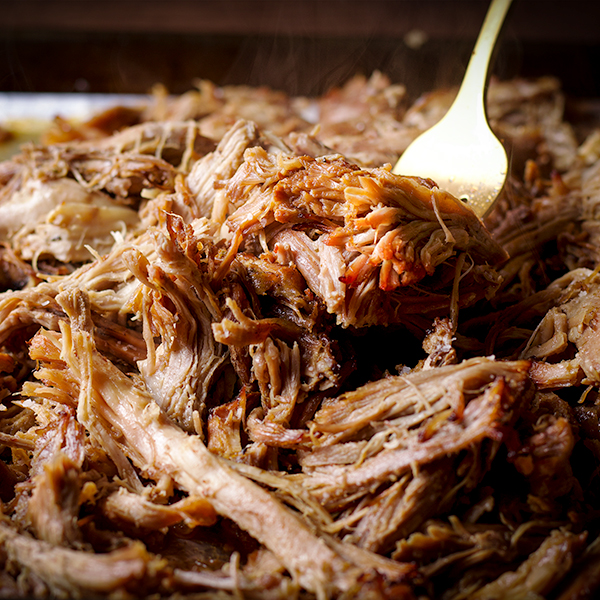

Carnitas

Description
Here's a recipe I learned during the pandemic! Easy to make, but takes a good amount of time to get right.
Ingredients
- Pork butt/shoulder (bone-in skin on preferred)
- Salt
- Pepper
- Cumin
- Oregano (powdered is easier to use as rub)
- Olive Oil
- Orange Juice
- Diced Onion
Steps
- Wash and dry pork. Rub salt and pepper onto pork.
- Combine Cumin, oregano, and olive oil together. Rub mixture onto pork. Make sure to get the edges/crevices
- Place in slowcooker after applying the rub. Make sure skin side is up.
- Add onion and orange juice to cooker. Arrangement of ingredients in the cooker does not matter.
- Cook for 12 hrs on low for best results
- After the pork is finished cooking, shred pork with a fork.
- (Optional) Pan fry pork, take some of the juices from the cooker and add. Will carmelize via Orange juice that was placed in the cooker before.
- Enjoy!